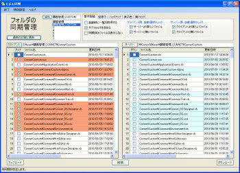

たぶん同期
パソコン月刊誌「iP!（アイピー）」2010年10月号（晋遊舎）に掲載されました。
２つのフォルダの同期をとるソフトです。
よく確認しながら、選択して同期したり、
バックアップ（元のファイルの）をとったりできます。
拡張子を選択しての同期実行も出来ます。
.NETのソース管理として使用しています。
機能はあまりありませんが、使い勝手は良いです。
また、おまけとして、NTPサーバーの時刻合わせができます。
|
 |
◆ 概要
たぶん同期は２つのフォルダを同期します。
ただし、無条件で同期するのではなく、差異のあるファイルを一覧表示し、
選択できるようにしてあります。
また、上書き時には、バックアップをとれるので、元に戻すことも可能です。
フリーウェア（寄付歓迎）
たぶん同期が必要とする動作環境は以下のとおりです。
Windows 2000
Windows XP
Windows VISTA
Windows 7
○対応機種
上記日本語OSが稼動するパーソナルコンピュータ
（インテル Pentium 4 以上を推奨）
○メモリ
Microsoft Windows Vista 512MB以上（1GB以上を推奨）
Microsoft Windows XP 512MB以上（1GB以上を推奨）
○ディスプレイ
解像度：1024 × 768以上必須、High Color（16ビット）以上を推奨
○ハードディスク
必須空き容量 256MB以上
Microsoft .NET Framework 2.0以上がインストールされていない場合は
さらに、384MB以上必要です。
データ領域は別途必要
Microsoft .Net Framework 2.0
以上がインストールされていない環境では、事前にインストールしておくか、
インストール時にインターネットに接続されている必要があります。
（セットアップ時に自動ダウンロードされます。）
インストールの起動方法
１．Setupフォルダ内のsetup.exeを起動して下さい。
（既にインストール済の場合）
①Microsoft Data Access Components 2.8
「同意する」を選択して下さい。
⑤たぶん同期セットアップウィザードへようこそ
「次へ」を選択して下さい。
⑥使用許諾契約書
ご一読後に、「同意する」「次へ」を選択して下さい。
⑦インストールフォルダの選択
インストールフォルダを変更する場合は、「参照」より設定して下さい。
複数ユーザーで使用する場合は、「すべてのユーザー」を選択して下さい。
⑧インストールの確認
最終確認になります。
よろしければ「次へ」を選択して下さい。
インストールが開始されます。
⑨インストールが完了しました。
「閉じる」を選択して下さい。
このアイコンよりプログラムを起動して下さい。
また、スタート（VISTAすべてのプログラム）にたぶん同期が作成されます。
この中に、プログラムの起動と、ヘルプファイルの起動が入っています。
※インストール後の最初の起動時は、画面が表示されるまでに少し時間がかかります。
たぶん同期のセットアッププログラムは、アンインストール
（ファイルの削除）機能を含んでいます。
コントロールパネルの［アプリケーションの追加と削除］から
たぶん同期を選択し、
［追加と削除］ボタンをクリックするとアンインストールが開始されます。
新着記事NEW ・・・新着記事一覧を見る
VBA100本ノック 100本目：WEBから100本ノックのリストを取得｜VBA練習問題（3月3日）
VBA100本ノック 99本目：自動席替え（行列と前後左右が全て違うように）｜VBA練習問題（3月2日）
VBA100本ノック 98本目：席替えルールが守られているか確認｜VBA練習問題（3月1日）
VBA100本ノック 97本目：Accessデータを取得（グループ集計）｜VBA練習問題（2月27日）
VBA100本ノック 96本目：Accessデータを取得（マスタ結合&抽出）｜VBA練習問題（2月26日）
VBA100本ノック 95本目：図形のテキストを検索するフォーム作成｜VBA練習問題（2月24日）
VBA100本ノック 94本目：表範囲からHTMLのtableタグを作成｜VBA練習問題（2月23日）
VBA100本ノック 93本目：複数ブックを連結して再分割｜VBA練習問題（2月22日）
VBA100本ノック 92本目：セルの色を16進で返す関数｜VBA練習問題（2月20日）
VBA100本ノック 91本目：時間計算（残業時間の月間合計）｜VBA練習問題（2月19日）
アクセスランキング ・・・ ランキング一覧を見る
1.最終行の取得（End,Rows.Count）｜VBA入門
2.RangeとCellsの使い方｜VBA入門
3.変数宣言のDimとデータ型｜VBA入門
4.マクロって何？VBAって何？｜VBA入門
5.Range以外の指定方法（Cells,Rows,Columns）｜VBA入門
6.セルのコピー&値の貼り付け（PasteSpecial）｜VBA入門
7.繰り返し処理（For Next)｜VBA入門
8.セルに文字を入れるとは（Range,Value）｜VBA入門
9.マクロはどこに書くの（VBEの起動）｜VBA入門
10.とにかく書いてみよう（Sub,End Sub）｜VBA入門
このサイトがお役に立ちましたら「シェア」「Bookmark」をお願いいたします。
記述には細心の注意をしたつもりですが、
間違いやご指摘がありましたら、「お問い合わせ」からお知らせいただけると幸いです。
掲載のVBAコードは動作を保証するものではなく、あくまでVBA学習のサンプルとして掲載しています。
掲載のVBAコードは自己責任でご使用ください。万一データ破損等の損害が発生しても責任は負いません。